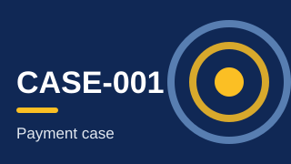
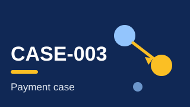
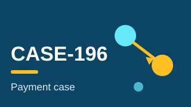
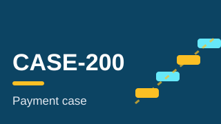
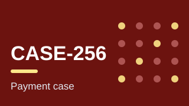
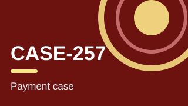
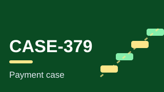
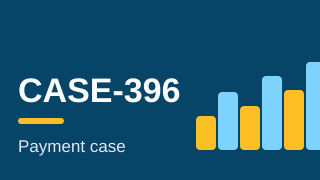
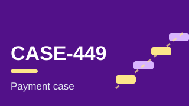
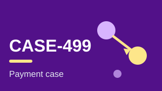

Payment Situations
End-to-end payments knowledge, one real situation at a time.
564 situational and factual items, sequenced across six learning stages from payment mechanics to senior SME judgement. Each item is a real situation with a visual explanation: a flow diagram that reveals step by step, a stacked chart for a comparison, or a labelled diagram for one concept. No multiple choice, no question and answer drills. This is for someone who has to investigate a payment, decide what went wrong and resolve it, not just describe how payments work.
Why this is different
The lessons teach the architecture: how a payment moves, what each message carries, how clearing and settlement work. Payment Situations teaches what to do when a real payment goes wrong: the investigation, the decision and the resolution, with the evidence a payments SME actually looks at. The 124 practice scenarios are exercises with positive and negative paths for learning a topic; these situations are a reference library of real operational situations, sequenced so you can study them in order or find one by its message, symptom or failure. The 320 interview questions test recall with model answers; a situation builds operational judgement. You trace the payment from the evidence, weigh the possible explanations against what the messages and the ledger actually show, choose the resolution the scheme rules allow, and keep the one rule that decides it next time.
What you get
- 564 situations, sequenced across 6 learning stages, foundations to advanced.
- Every situation explained with a visual: a flow diagram with a reveal sequence, a stacked chart, or a labelled diagram.
- Short explanations and one line to remember per situation. No MCQ.
- Search by title, case code, message, symptom or failure, and filter by stage, domain, message, failure category, level or resolution.
- Bookmarks, progress tracking and your own notes per situation, kept in this browser.
- Four mastery states per situation, Read, Understood, Practised and Reviewed, with a personal dashboard, a review queue and a downloadable stage completion report.
- Export your notes, bookmarks and progress as a file from the workspace bar, and restore them the same way.
- New situations are added to the same product at no extra charge.
Access, updates and refunds
Practice Experiences, which includes Payment Situations, costs ₹1,499 ₹999 at the launch offer price, for 1 year of access. Buy it on the payment page with Cashfree or PayPal, or in the app. Your bookmarks, progress and notes live in this browser only: they do not follow you to another device, and clearing browser data wipes them. You can export them as a file from the workspace bar and restore them later, so a cleared browser does not mean lost work. New situations are added to the same product at no extra charge. Refunds follow the refund policy.
Training that uses these cases: Payment Exception Management, Payments Business Analyst Course, and Practice Experiences.
The six learning stages
You can open any stage in any order. Each stage lists what it assumes you already know and what it should leave you able to do.
- Stage 1: Payment mechanics (195 situations)
How a payment actually moves: who instructs it, which message carries it, and which accounts are debited and credited at each step.
Before this stage: No prior payments knowledge is assumed. You only need to know what a bank account and a payment instruction are.
After this stage you can: Name the parties and messages in a payment, trace a payment from instruction to beneficiary credit, and tell authorisation apart from clearing and settlement. - Stage 2: Processing decisions (60 situations)
The decisions a bank makes while a payment is being processed: which route it takes, whether it passes validation and screening, how it is prioritised when liquidity is tight, and when it settles.
Before this stage: Stage 1. You can name the parties and messages and trace a payment end to end.
After this stage you can: Explain why a payment took its route, what validation, screening and preprocessor checks decide, and when a payment is held, prioritised or stopped. - Stage 3: Operational exceptions (94 situations)
What happens when a payment does not go through as instructed: rejects, returns, repairs, timeouts, duplicates and recalls, and how each one is investigated and resolved.
Before this stage: Stages 1 and 2. You know how a normal payment flows and what each check does.
After this stage you can: Classify a failure as a reject, return, repair, timeout, duplicate or recall, read its reason code, and pick the handling path the scheme rules allow. - Stage 4: Cross-system consequences (45 situations)
What breaks when two systems disagree: a message the ledger cannot post, a reconciliation break, an event that arrives out of order, and how the inconsistency is found and fixed.
Before this stage: Stages 1 to 3, and a working idea of how a ledger posts and how reconciliation compares records.
After this stage you can: Find where two systems disagree, quantify a reconciliation gap, and trace the break back to the message or posting that caused it. - Stage 5: Complex banking scenarios (38 situations)
Payments that depend on more than one bank or scheme: correspondent banking, liquidity across currencies, scheme rules and cut-offs, and failures that cross bank boundaries.
Before this stage: Stages 1 to 4, and the basics of correspondent banking, currencies and cut-offs.
After this stage you can: Explain a payment that crosses banks, currencies and schemes, weigh cut-offs and operating hours, and handle a timeout across corridor legs without retrying blind. - Stage 6: Senior SME judgement (132 situations)
The judgement calls: finding the root cause, weighing competing resolutions, deciding what control should have caught it, and what the fix means for the architecture.
Before this stage: Stages 1 to 5. You have worked through failures, reconciliation breaks and cross-bank payments.
After this stage you can: Trace a failure to its root cause, weigh competing resolutions, decide reject or repair from the business context, name the control that should have caught it, and turn a scheme rule into a buildable requirement.
Try 10 free samples
These 10 situations are free to read, two from stages 1, 2, 3 and 6 and one from stages 4 and 5, with the same visuals as the paid items: a flow diagram that reveals step by step, a stacked chart, or a labelled diagram. The full product has 564 situations; these 10 are the only ones outside the paywall, and they carry the same copy protection as the paid content.
Stage 1: Payment mechanics · Situation 1 · foundation
EUR 50,000 sent, and nobody could say where it was

Work through this case: EUR 50,000 sent, and nobody could say where it was. A corporate customer sent EUR 50,000 to a supplier. The money left the account. Three days later, nobody could say where it was. One thing to remember: A message sent is not a payment completed.
A corporate customer sent EUR 50,000 to a supplier. The money left the account. Three days later, nobody could say where it was. Here is what happened: → pain.001 raised by the customer → pacs.008 sent to the beneficiary bank → pacs.002 status report never checked → pacs.028 status request never sent → pacs.004 return never arrived The requirement said: "Show the payment as sent once pacs.008 goes out." So the screen said sent, and the team stopped looking. Why? pacs.008 is only the instruction. It does not prove the payment arrived, settled, or was credited. The status lives in pacs.002, the investigation lives in pacs.028 and pacs.029, and a return only comes back as pacs.004. Without those messages, sent is just a guess. A message sent is not a payment completed. BA Takeaway Each pacs message answers a different question, so keep them separate: → pacs.008, was the instruction sent → pacs.002, what is the status now → pacs.028 and pacs.029, what is being investigated → pacs.004, has the money come back The real requirement is not "When do we show it as sent?" It is "What evidence proves the payment reached its destination?" Have you ever chased a payment that showed as sent while the money was nowhere to be found?
One thing to remember: A message sent is not a payment completed.
Ledger impact: what moves where
The settlement model depends on the rail used. Both models are shown so you can compare them. Every payment is double entry: the customer leg and the settlement leg must balance. If the customer account moves but the settlement leg does not, the payment is not complete.
| Account | RTGS (gross, real time) | Deferred net settlement (DNS) |
|---|---|---|
| Customer account | Debited at once when the payment is released; credited at once when it arrives. No value-date gap. | Debited or credited at the clearing cut-off, not at instruction time. Value dating follows the scheme rules. |
| Nostro / vostro account | Debited at the correspondent or central bank settlement account at the same moment as the customer leg. No intraday float between the banks. | No nostro movement until the net settlement. The bilateral position builds up through the cycle and is settled once. |
| Clearing house / settlement account | Settlement in central bank money at the moment of the payment. No net position, no settlement risk between the two banks. | Individual payments net to one position per bank per cycle. A single net settlement entry moves between settlement accounts at the cycle time. |
Stage 1: Payment mechanics · Situation 4 · foundation
Card approved for GBP 850, merchant says not paid

Work through this case: Card approved for GBP 850, merchant says not paid. A customer bought goods worth GBP 850 on a card. The terminal said approved. The merchant said the money never arrived. One thing to remember: Authorisation is permission. It is not money.
A customer bought goods worth GBP 850 on a card. The terminal said approved. The merchant said the money never arrived. Here is what happened: → Authorisation approved by the issuer → Clearing record exchanged between the banks → Settlement to the merchant never completed The requirement said: "Treat an approved authorisation as a completed payment." So the order was released, and the merchant waited for money that had not moved. Why? Authorisation only checks the card, the balance, fraud signals and the PIN, CVV or 3DS check. Clearing only exchanges the record. Only settlement moves the funds to the merchant, and a clearing mismatch or a settlement failure can leave an approved payment unpaid. Authorisation is permission. It is not money. BA Takeaway Authorisation, clearing and settlement are three different events, so keep them separate: → Authorisation status → Clearing record status → Settlement and funds received The real requirement is not "When was it approved?" It is "What evidence proves the merchant was actually paid?" Have you ever seen an approved card payment that the merchant never received?
One thing to remember: Authorisation is permission. It is not money.
Ledger impact: what moves where
The settlement model depends on the rail used. Both models are shown so you can compare them. Every payment is double entry: the customer leg and the settlement leg must balance. If the customer account moves but the settlement leg does not, the payment is not complete.
| Account | RTGS (gross, real time) | Deferred net settlement (DNS) |
|---|---|---|
| Customer account | Debited at once when the payment is released; credited at once when it arrives. No value-date gap. | Debited or credited at the clearing cut-off, not at instruction time. Value dating follows the scheme rules. |
| Nostro / vostro account | Debited at the correspondent or central bank settlement account at the same moment as the customer leg. No intraday float between the banks. | No nostro movement until the net settlement. The bilateral position builds up through the cycle and is settled once. |
| Clearing house / settlement account | Settlement in central bank money at the moment of the payment. No net position, no settlement risk between the two banks. | Individual payments net to one position per bank per cycle. A single net settlement entry moves between settlement accounts at the cycle time. |
Stage 2: Processing decisions · Situation 28 · foundation
VoP said No Match, GBP 12,000 went anyway

Work through this case: VoP said No Match, GBP 12,000 went anyway. A payer sent GBP 12,000 to a supplier. Verification of Payee returned No Match. The payer carried on, and the money went to the wrong account. One thing to remember: No Match is a warning, not a verdict.
A payer sent GBP 12,000 to a supplier. Verification of Payee returned No Match. The payer carried on, and the money went to the wrong account. Here is what happened: → Payer enters the payee name and account details → VoP check returns No Match → Payer reviews the warning and continues anyway → Payment reaches the wrong payee The requirement said: "A No Match stops the payment." But the build did not stop it. Depending on the bank process, the payer can review and correct the details, or continue knowing the payment may reach the wrong payee. Why? A No Match says only that the name does not match the name the payee bank holds. It does not say whether it is fraud or a simple typing error, a trading name, or a joint account held under a different name. The check warns, it does not decide. No Match is a warning, not a verdict. BA Takeaway A name check, a payer decision and a payment outcome are three different things, so keep them separate: → VoP result → Payer decision to correct or continue → Payment destination confirmed Add a clear warning, a correction path, and a record of the payer choosing to continue. The real requirement is not "When do we stop the payment?" It is "What evidence proves the payer understood the risk before continuing?" Have you seen a No Match warning ignored and the money land in the wrong account?
One thing to remember: No Match is a warning, not a verdict.
Ledger impact: what moves where
The settlement model depends on the rail used. Both models are shown so you can compare them. Every payment is double entry: the customer leg and the settlement leg must balance. If the customer account moves but the settlement leg does not, the payment is not complete.
| Account | RTGS (gross, real time) | Deferred net settlement (DNS) |
|---|---|---|
| Customer account | Debited at once when the payment is released; credited at once when it arrives. No value-date gap. | Debited or credited at the clearing cut-off, not at instruction time. Value dating follows the scheme rules. |
| Nostro / vostro account | Debited at the correspondent or central bank settlement account at the same moment as the customer leg. No intraday float between the banks. | No nostro movement until the net settlement. The bilateral position builds up through the cycle and is settled once. |
| Clearing house / settlement account | Settlement in central bank money at the moment of the payment. No net position, no settlement risk between the two banks. | Individual payments net to one position per bank per cycle. A single net settlement entry moves between settlement accounts at the cycle time. |
Stage 2: Processing decisions · Situation 117 · core
Approved in one click, EUR 75,000 never reached the supplier

Work through this case: Approved in one click, EUR 75,000 never reached the supplier. A maker raised a corporate payment of EUR 75,000 in one click. Workflow approved it. The supplier never received it. One thing to remember: Approval is not settlement.
A maker raised a corporate payment of EUR 75,000 in one click. Workflow approved it. The supplier never received it. Here is what happened: → Maker initiates the payment → Preprocessor checks entitlement, account, limits, fees and payee → Workflow approves the payment → Bank screening holds it → Account never debited, network never clears it, ledger never closes it The requirement said: "Once workflow approves, the payment is sent." So the screen showed approved, and everyone assumed the money was on its way. Why? Fifteen steps and nine decisions stand between maker and ledger. Every Yes moves the payment forward, and every No stops or re-routes it. A No at bank screening stops the payment after approval, and an approved payment that never clears is still an unpaid payment. Approval is not settlement. BA Takeaway Approval, screening, debit, clearing and ledger posting are separate stages, so keep them separate: → Workflow approval status → Bank screening outcome → Account debit confirmed → Network clearing and ledger posting The real requirement is not "When was it approved?" It is "What evidence proves each step completed, including the final ledger posting?" Have you ever seen an approved payment stall silently at a later step?
One thing to remember: Approval is not settlement.
Ledger impact: what moves where
The settlement model depends on the rail used. Both models are shown so you can compare them. Every payment is double entry: the customer leg and the settlement leg must balance. If the customer account moves but the settlement leg does not, the payment is not complete.
| Account | RTGS (gross, real time) | Deferred net settlement (DNS) |
|---|---|---|
| Customer account | Debited at once when the payment is released; credited at once when it arrives. No value-date gap. | Debited or credited at the clearing cut-off, not at instruction time. Value dating follows the scheme rules. |
| Nostro / vostro account | Debited at the correspondent or central bank settlement account at the same moment as the customer leg. No intraday float between the banks. | No nostro movement until the net settlement. The bilateral position builds up through the cycle and is settled once. |
| Clearing house / settlement account | Settlement in central bank money at the moment of the payment. No net position, no settlement risk between the two banks. | Individual payments net to one position per bank per cycle. A single net settlement entry moves between settlement accounts at the cycle time. |
Stage 3: Operational exceptions · Situation 3 · foundation
EUR 20,000 SEPA payment came back, the team treated it as a reject

Work through this case: EUR 20,000 SEPA payment came back, the team treated it as a reject. A SEPA payment of EUR 20,000 failed. The team raised it as a reject and asked the customer to resend it. The customer had already been debited, and the money came back twice. One thing to remember: The stage decides the path.
A SEPA payment of EUR 20,000 failed. The team raised it as a reject and asked the customer to resend it. The customer had already been debited, and the money came back twice. Here is what happened: → pain.001 instruction raised → pacs.008 sent for EUR 20,000 → Payment settles → pacs.004 return arrives after settlement The requirement said: "Treat every failed SEPA payment the same way." So the team followed the reject path for a payment that had already settled. Why? In SEPA, timing is the whole distinction. A reject happens before settlement and is reported with pacs.002. A return happens after settlement and uses pacs.004. A reject means the money never moved, so resend is safe. A return means the money moved and came back, so resending without checking credits the customer twice. The stage decides the path. BA Takeaway Before and after settlement are different worlds, so keep them separate: → Reject before settlement, pacs.002 → Return after settlement, pacs.004 → Funds position confirmed before any resend The real requirement is not "When did it fail?" It is "What evidence proves whether the funds moved, before we tell the customer to resend?" Have you ever seen a return handled as a reject and the customer paid twice?
One thing to remember: The stage decides the path.
Ledger impact: what moves where
The settlement model depends on the rail used. Both models are shown so you can compare them. Every payment is double entry: the customer leg and the settlement leg must balance. If the customer account moves but the settlement leg does not, the payment is not complete.
| Account | RTGS (gross, real time) | Deferred net settlement (DNS) |
|---|---|---|
| Customer account | Debited at once when the payment is released; credited at once when it arrives. No value-date gap. | Debited or credited at the clearing cut-off, not at instruction time. Value dating follows the scheme rules. |
| Nostro / vostro account | Debited at the correspondent or central bank settlement account at the same moment as the customer leg. No intraday float between the banks. | No nostro movement until the net settlement. The bilateral position builds up through the cycle and is settled once. |
| Clearing house / settlement account | Settlement in central bank money at the moment of the payment. No net position, no settlement risk between the two banks. | Individual payments net to one position per bank per cycle. A single net settlement entry moves between settlement accounts at the cycle time. |
Stage 3: Operational exceptions · Situation 43 · foundation
GBP 4,500 failed three times, and the reason was wrong every time

Work through this case: GBP 4,500 failed three times, and the reason was wrong every time. A customer tried to pay GBP 4,500. It failed three times. Each time the screen said the same thing: declined. One thing to remember: A failure label is not a diagnosis.
A customer tried to pay GBP 4,500. It failed three times. Each time the screen said the same thing: declined. Here is what happened: → First attempt fails on a timeout, no response arrives in time → Second attempt fails on a limit, the amount exceeds the daily limit → Third attempt fails on a downstream error after acceptance → Customer is told declined on all three attempts The requirement said: "Show one generic failure message for every failed payment." So the customer kept retrying the same payment, and support kept blaming the issuer. Why? A timeout, a limit failure and a downstream failure need completely different actions. A timeout may succeed on retry, a limit needs a higher limit or a split payment, and a downstream failure needs operations to trace the payment after acceptance. One label hides the cause and sends everyone down the wrong path. A failure label is not a diagnosis. BA Takeaway The cause decides who acts and what the customer is told, so keep the causes separate: → Issuer decline and validation failure → Limit failure and timeout failure → Connectivity, risk and downstream failure The real requirement is not "When do we show declined?" It is "What evidence proves which cause failed, and who must act on it?" Have you ever chased a declined payment that turned out to be a timeout?
One thing to remember: A failure label is not a diagnosis.
Ledger impact: what moves where
The settlement model depends on the rail used. Both models are shown so you can compare them. Every payment is double entry: the customer leg and the settlement leg must balance. If the customer account moves but the settlement leg does not, the payment is not complete.
| Account | RTGS (gross, real time) | Deferred net settlement (DNS) |
|---|---|---|
| Customer account | Debited at once when the payment is released; credited at once when it arrives. No value-date gap. | Debited or credited at the clearing cut-off, not at instruction time. Value dating follows the scheme rules. |
| Nostro / vostro account | Debited at the correspondent or central bank settlement account at the same moment as the customer leg. No intraday float between the banks. | No nostro movement until the net settlement. The bilateral position builds up through the cycle and is settled once. |
| Clearing house / settlement account | Settlement in central bank money at the moment of the payment. No net position, no settlement risk between the two banks. | Individual payments net to one position per bank per cycle. A single net settlement entry moves between settlement accounts at the cycle time. |
Stage 4: Cross-system consequences · Situation 455 · advanced
500 unmatched out of 20,000, and a INR 40 lakh figure that was not a loss

Work through this case: 500 unmatched out of 20,000, and a INR 40 lakh figure that was not a loss. A bank processed 20,000 transactions in a day. The morning reconciliation showed 500 transactions unmatched between the ledger and the clearing reports. A report called it a INR 40 lakh loss before anyone had investigated a single item. One thing to remember: Unmatched is a question, not a loss.
A bank processed 20,000 transactions in a day. The morning reconciliation showed 500 transactions unmatched between the ledger and the clearing reports. A report called it a INR 40 lakh loss before anyone had investigated a single item. Here is what happened: → 20,000 transactions processed → Ledger compared with clearing reports → 500 transactions unmatched, an unmatched rate of 2.5 percent → Illustrative exposure calculated as 500 multiplied by an average of INR 8,000, giving INR 40 lakh → The illustrative figure reported as a confirmed loss The requirement said: "Report the unmatched exposure as the loss." So a framing figure became a headline loss, and the real investigation started on the back foot. Why? Unmatched is not lost. Most unmatched items turn out to be timing differences, late clearing files, or posting lags that resolve on their own. The INR 40 lakh figure frames the scale of the problem, but the real exposure is only known once the unmatched transactions are investigated one by one. Unmatched is a question, not a loss. BA Takeaway Population, unmatched rate and confirmed loss are three different numbers, so keep them separate: → 20,000 transactions processed → 500 unmatched, 2.5 percent → Confirmed loss only after item by item investigation The real requirement is not "How big is the gap?" It is "What evidence proves which unmatched items are real losses, and which are timing?" Have you ever seen an illustrative exposure reported as a confirmed loss?
One thing to remember: Unmatched is a question, not a loss.
Ledger impact: what moves where
The settlement model depends on the rail used. Both models are shown so you can compare them. Every payment is double entry: the customer leg and the settlement leg must balance. If the customer account moves but the settlement leg does not, the payment is not complete.
| Account | RTGS (gross, real time) | Deferred net settlement (DNS) |
|---|---|---|
| Customer account | Debited at once when the payment is released; credited at once when it arrives. No value-date gap. | Debited or credited at the clearing cut-off, not at instruction time. Value dating follows the scheme rules. |
| Nostro / vostro account | Debited at the correspondent or central bank settlement account at the same moment as the customer leg. No intraday float between the banks. | No nostro movement until the net settlement. The bilateral position builds up through the cycle and is settled once. |
| Clearing house / settlement account | Settlement in central bank money at the moment of the payment. No net position, no settlement risk between the two banks. | Individual payments net to one position per bank per cycle. A single net settlement entry moves between settlement accounts at the cycle time. |
Stage 5: Complex banking scenarios · Situation 18 · foundation
USD 25,000 cross-border in two days, domestic instant in seconds

Work through this case: USD 25,000 cross-border in two days, domestic instant in seconds. A customer sent USD 25,000 overseas. A domestic instant payment the same morning arrived in seconds. The cross-border payment took two days. One thing to remember: A chain is only as fast as its slowest hop.
A customer sent USD 25,000 overseas. A domestic instant payment the same morning arrived in seconds. The cross-border payment took two days. Here is what happened: → pacs.008 raised for USD 25,000 → Intermediary bank receives it after its cut-off → Currency conversion queued for the next window → Compliance and sanctions screening holds it → Settlement waits for the next system operating hours The requirement said: "Each leg is fast, so the whole payment will be fast." So the customer was promised same-day delivery, and the promise broke at the first slow hop. Why? A domestic instant payment moves inside one system under one set of rules. A cross-border payment passes through several payment service providers, currency conversions, compliance checks and settlement systems. Each hop adds time, and the hops depend on each other's operating hours. A fast leg cannot rescue a chain that waits overnight. A chain is only as fast as its slowest hop. BA Takeaway Each hop has its own clock, so keep them separate: → Intermediary cut-off and operating hours → Currency conversion window → Compliance and sanctions screening → Final settlement system hours The real requirement is not "How fast is each leg?" It is "What evidence proves the full chain can complete inside the promised time?" Have you ever promised a fast cross-border payment that a single slow hop delayed by a day?
One thing to remember: A chain is only as fast as its slowest hop.
Ledger impact: what moves where
This situation runs on an instant rail: settlement is immediate, in central bank money or prefunded funds. Every payment is double entry: the customer leg and the settlement leg must balance. If the customer account moves but the settlement leg does not, the payment is not complete.
| Account | RTGS (gross, real time) | Deferred net settlement (DNS) |
|---|---|---|
| Customer account | Debited at once when the payment is released; credited at once when it arrives. No value-date gap. | Debited or credited at the clearing cut-off, not at instruction time. Value dating follows the scheme rules. |
| Nostro / vostro account | Debited at the correspondent or central bank settlement account at the same moment as the customer leg. No intraday float between the banks. | No nostro movement until the net settlement. The bilateral position builds up through the cycle and is settled once. |
| Clearing house / settlement account | Settlement in central bank money at the moment of the payment. No net position, no settlement risk between the two banks. | Individual payments net to one position per bank per cycle. A single net settlement entry moves between settlement accounts at the cycle time. |
Stage 6: Senior SME judgement · Situation 87 · foundation
P1 hit mobile banking, service back in 40 minutes, cause still unknown

Work through this case: P1 hit mobile banking, service back in 40 minutes, cause still unknown. A P1 incident struck mobile banking, fund transfers and ATMs. Transfers worth EUR 500,000 queued while customers waited. The war room restored service in about 40 minutes. The cause was still unknown. One thing to remember: Restored is not resolved.
A P1 incident struck mobile banking, fund transfers and ATMs. Transfers worth EUR 500,000 queued while customers waited. The war room restored service in about 40 minutes. The cause was still unknown. Here is what happened: → P1 declared across mobile banking, fund transfers and ATMs → War room restores service in about 40 minutes → Customers told service is back → A batch process had consumed critical database resources during peak hours → The same batch is still scheduled for tomorrow The requirement said: "Close the incident once service is restored." So the incident closed, and the cause that broke it was left running. Why? Incident and problem management are two disciplines with different clocks. Incident restores service fast. Problem finds why it happened so it never recurs. Restoring service without fixing the batch overlap only buys 24 hours until the next peak. Restored is not resolved. BA Takeaway Restore and resolve are two different jobs, so keep them separate: → Incident timeline, restore the service → Problem timeline, find the cause → Permanent fix, reschedule the batch and add guards and alerts The real requirement is not "When was service back?" It is "What evidence proves the cause is fixed and cannot recur at the next peak?" Have you ever seen an incident closed as fixed, only for the same cause to strike again the next day?
One thing to remember: Restored is not resolved.
Ledger impact: what moves where
This situation settles by deferred net settlement: payments net to one position per bank per cycle, and only the net amount moves. Every payment is double entry: the customer leg and the settlement leg must balance. If the customer account moves but the settlement leg does not, the payment is not complete.
| Account | RTGS (gross, real time) | Deferred net settlement (DNS) |
|---|---|---|
| Customer account | Debited at once when the payment is released; credited at once when it arrives. No value-date gap. | Debited or credited at the clearing cut-off, not at instruction time. Value dating follows the scheme rules. |
| Nostro / vostro account | Debited at the correspondent or central bank settlement account at the same moment as the customer leg. No intraday float between the banks. | No nostro movement until the net settlement. The bilateral position builds up through the cycle and is settled once. |
| Clearing house / settlement account | Settlement in central bank money at the moment of the payment. No net position, no settlement risk between the two banks. | Individual payments net to one position per bank per cycle. A single net settlement entry moves between settlement accounts at the cycle time. |
Stage 6: Senior SME judgement · Situation 353 · core
EUR 30,000 payment timed out, the fault was made at the very first step

Work through this case: EUR 30,000 payment timed out, the fault was made at the very first step. A payment of EUR 30,000 timed out. The team blamed the network and the receiving bank. The fault was made at the very first step, when the message was created. One thing to remember: The symptom is downstream. The cause is upstream.
A payment of EUR 30,000 timed out. The team blamed the network and the receiving bank. The fault was made at the very first step, when the message was created. Here is what happened: → pain.001 created with a small deviation from the payment message standard → pacs.008 sent downstream → Each hop passes the deviation on → Receiving system cannot process it, pacs.002 reports a timeout The requirement said: "Validate the message at entry, then trust it downstream." So the message passed entry checks, and the deviation compounded at every hop until the payment timed out. Why? The most visible error is rarely the root cause. A payment timeout is often a downstream effect of something earlier. A small deviation from the standard compounds hop by hop, and by the time the timeout appears, the trail back to the creation step has gone cold unless timestamps and message copies were kept. The symptom is downstream. The cause is upstream. BA Takeaway Creation, each hop and the final timeout are separate evidence points, so keep them separate: → Message creation and standards validation → Hop by hop trace with timestamps and message copies → Timeout symptom, traced back to its origin Validate messages against the standard at every boundary, not just at entry. The real requirement is not "Where did it time out?" It is "What evidence proves the message was valid at every boundary it crossed?" Have you ever traced a timeout back to a tiny error made when the message was created?
One thing to remember: The symptom is downstream. The cause is upstream.
Ledger impact: what moves where
The settlement model depends on the rail used. Both models are shown so you can compare them. Every payment is double entry: the customer leg and the settlement leg must balance. If the customer account moves but the settlement leg does not, the payment is not complete.
| Account | RTGS (gross, real time) | Deferred net settlement (DNS) |
|---|---|---|
| Customer account | Debited at once when the payment is released; credited at once when it arrives. No value-date gap. | Debited or credited at the clearing cut-off, not at instruction time. Value dating follows the scheme rules. |
| Nostro / vostro account | Debited at the correspondent or central bank settlement account at the same moment as the customer leg. No intraday float between the banks. | No nostro movement until the net settlement. The bilateral position builds up through the cycle and is settled once. |
| Clearing house / settlement account | Settlement in central bank money at the moment of the payment. No net position, no settlement risk between the two banks. | Individual payments net to one position per bank per cycle. A single net settlement entry moves between settlement accounts at the cycle time. |
Access
Continue learning
Every situation here is drawn from the full course. Learn the subjects behind them: ISO 20022 Training Course, SWIFT Payments Training, RTGS vs ACH and Payments Business Analyst Training.